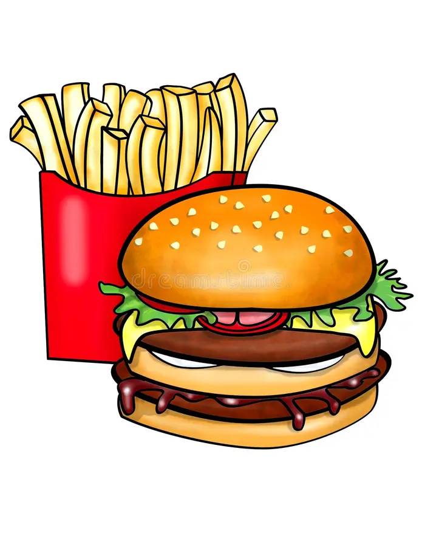

Burger

Keys to Success
Butter that pan up real good!
Ingredients
- 1 lb ground beef (80/20)
- Salt & pepper to taste
- 4 burger buns
- 4 slices of cheese (optional)
- Lettuce, tomato, onion, pickles
- Ketchup, mustard, mayo
Instructions for cooking
- Form Patties: Divide beef into 4 equal parts and shape into patties. Season with salt and pepper.
- Cook: Grill or pan-fry over medium-high heat for 3–4 mins per side (add cheese during the last minute if using).
- Toast Buns: Lightly toast buns for 1–2 minutes.
- Assemble: Add patty to bun, top with lettuce, tomato, onion, and your favorite condiments.
- Serve: Enjoy hot with fries or a cold drink!
Home Page